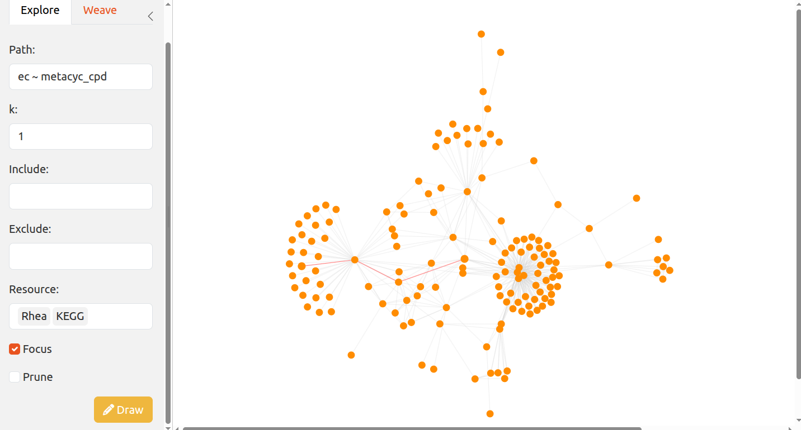
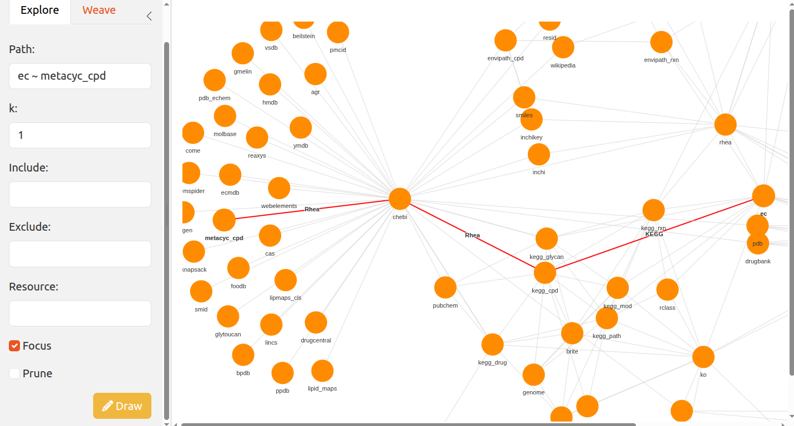
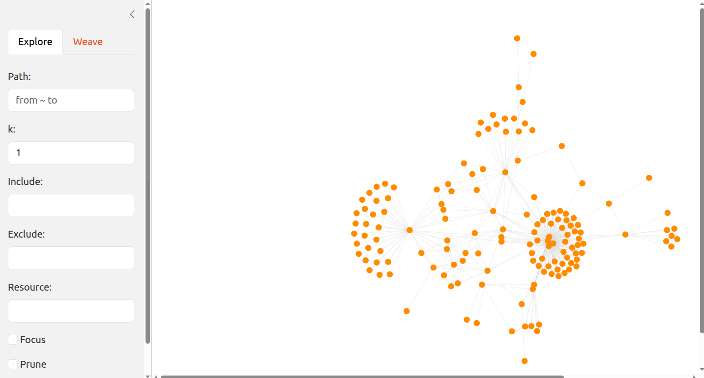

vignettes/ariadneApp.Rmd
ariadneApp.RmdariadneApp is a web app version of the ariadne package designed to interactively weave resources across the ariadne graph.
The app can be launched with shinePath().
# Import ariadneApp
library(ariadneApp)
# Launch ariadneApp
if (interactive()) {
shinePath()
}
By zooming in, it is possible to focus on specific regions of the graph. With a long press, you can select nodes to link. Single click on empty areas to remove the selection.

Selecting resources will subset the graph to the chosen
ones.
Prune, Focus.

## Citation info
citation("ariadneApp")
#> Warning in citation("ariadneApp"): could not determine year for 'ariadneApp'
#> from package DESCRIPTION file
#> To cite package 'ariadneApp' in publications use:
#>
#> Benedetti G, Bastiaanssen T, Lahti L (????). _ariadneApp: ariadneApp:
#> interactively explore the ariadne resource graph_. R package version
#> 0.0.5, <https://codeberg.org/Minotau-R/ariadneApp>.
#>
#> A BibTeX entry for LaTeX users is
#>
#> @Manual{,
#> title = {ariadneApp: ariadneApp: interactively explore the ariadne resource graph},
#> author = {Giulio Benedetti and Thomaz Bastiaanssen and Leo Lahti},
#> note = {R package version 0.0.5},
#> url = {https://codeberg.org/Minotau-R/ariadneApp},
#> }ariadneApp originates from the joint effort of the R/Bioconductor community. It is mainly based on the following software:
You can reach us by one of the communication channels listed here. We are happy to receive questions, suggestions as well as contributions. For the last point, check the contributor guidelines.
R session information:
#> R version 4.6.1 (2026-06-24)
#> Platform: x86_64-pc-linux-gnu
#> Running under: Ubuntu 24.04.5 LTS
#>
#> Matrix products: default
#> BLAS: /usr/lib/x86_64-linux-gnu/openblas-pthread/libblas.so.3
#> LAPACK: /usr/lib/x86_64-linux-gnu/openblas-pthread/libopenblasp-r0.3.26.so; LAPACK version 3.12.0
#>
#> locale:
#> [1] LC_CTYPE=en_US.UTF-8 LC_NUMERIC=C LC_TIME=en_US.UTF-8 LC_COLLATE=en_US.UTF-8
#> [5] LC_MONETARY=en_US.UTF-8 LC_MESSAGES=en_US.UTF-8 LC_PAPER=en_US.UTF-8 LC_NAME=C
#> [9] LC_ADDRESS=C LC_TELEPHONE=C LC_MEASUREMENT=en_US.UTF-8 LC_IDENTIFICATION=C
#>
#> time zone: UTC
#> tzcode source: system (glibc)
#>
#> attached base packages:
#> [1] stats graphics grDevices utils datasets methods base
#>
#> other attached packages:
#> [1] ariadneApp_0.0.5 visNetwork_2.1.4 shiny_1.14.0 igraph_2.3.4 bslib_0.12.0 BiocStyle_2.41.0
#>
#> loaded via a namespace (and not attached):
#> [1] DBI_1.3.0 gridExtra_2.3.1 enviPathR_1.0.2 httr2_1.3.0
#> [5] rlang_1.3.0 magrittr_2.0.5 otel_0.2.0 matrixStats_1.5.0
#> [9] compiler_4.6.1 RSQLite_3.53.3 png_0.1-9 systemfonts_1.3.2
#> [13] vctrs_0.7.3 stringr_1.6.0 pkgconfig_2.0.3 crayon_1.5.3
#> [17] fastmap_1.2.0 dbplyr_2.6.0 XVector_0.53.0 ggraph_2.2.2
#> [21] promises_1.5.0 rmarkdown_2.32 tzdb_0.5.0 ragg_1.5.2
#> [25] purrr_1.2.2 bit_4.6.0 xfun_0.62 cachem_1.1.0
#> [29] jsonlite_2.0.0 progress_1.2.3 blob_1.3.0 later_1.4.8
#> [33] DelayedArray_0.39.8 BiocParallel_1.47.0 tweenr_2.0.3 prettyunits_1.2.0
#> [37] parallel_4.6.1 R6_2.6.1 stringi_1.8.9 RColorBrewer_1.1-3
#> [41] GenomicRanges_1.65.4 jquerylib_0.1.4 Rcpp_1.1.2 Seqinfo_1.3.2
#> [45] bookdown_0.48 assertthat_0.2.1 SummarizedExperiment_1.43.0 knitr_1.52
#> [49] readr_2.2.0 IRanges_2.47.5 rentrez_1.2.4 rotl_3.1.1
#> [53] httpuv_1.6.17 Matrix_1.7-6 tidyselect_1.2.1 viridis_0.6.5
#> [57] abind_1.4-8 yaml_2.3.12 codetools_0.2-20 curl_8.1.0
#> [61] lattice_0.23-1 tibble_3.3.1 Biobase_2.73.2 withr_3.0.3
#> [65] KEGGREST_1.53.6 S7_0.2.2 evaluate_1.0.5 desc_1.4.3
#> [69] polyclip_1.10-7 BiocFileCache_3.3.2 Biostrings_2.81.9 pillar_1.11.1
#> [73] BiocManager_1.30.27 filelock_1.0.3 MatrixGenerics_1.25.0 stats4_4.6.1
#> [77] shinyjs_2.1.1 generics_0.1.4 hms_1.1.4 S4Vectors_0.51.10
#> [81] ggplot2_4.0.3 scales_1.4.0 xtable_1.8-8 rncl_0.8.10
#> [85] glue_1.8.1 tools_4.6.1 data.table_1.18.6.1 forcats_1.0.1
#> [89] XML_3.99-0.25 graphlayouts_1.2.5 fs_2.1.0 multifactor_0.1.3
#> [93] tidygraph_1.3.1 grid_4.6.1 ape_5.8-1 tidyr_1.3.2
#> [97] nlme_3.1-171 ggforce_0.5.0 cli_3.6.6 textshaping_1.0.5
#> [101] viridisLite_0.4.3 S4Arrays_1.13.2 arrow_26.0.0 dplyr_1.2.1
#> [105] gtable_0.3.6 sass_0.4.10 digest_0.6.39 BiocGenerics_0.59.12
#> [109] ggrepel_0.9.8 SparseArray_1.13.4 waiter_0.2.5.1 htmlwidgets_1.6.4
#> [113] farver_2.1.2 memoise_2.0.1 htmltools_0.5.9 pkgdown_2.2.1
#> [117] lifecycle_1.0.5 httr_1.4.9 mime_0.13 ariadne_0.2.12
#> [121] bit64_4.8.6 MASS_7.3-66